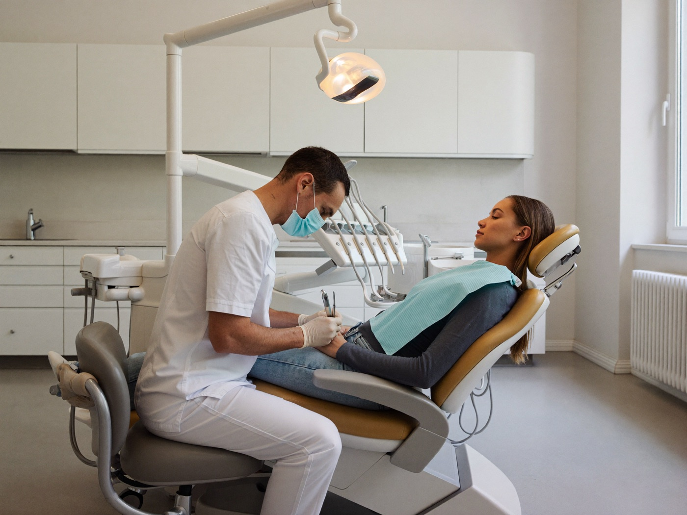
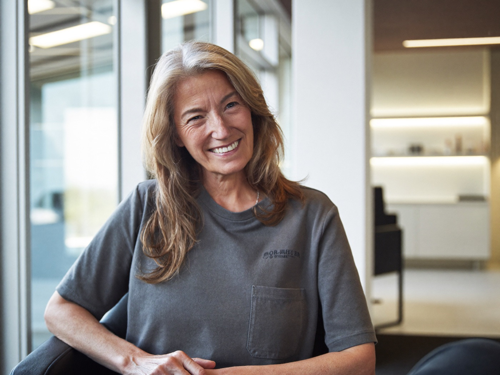
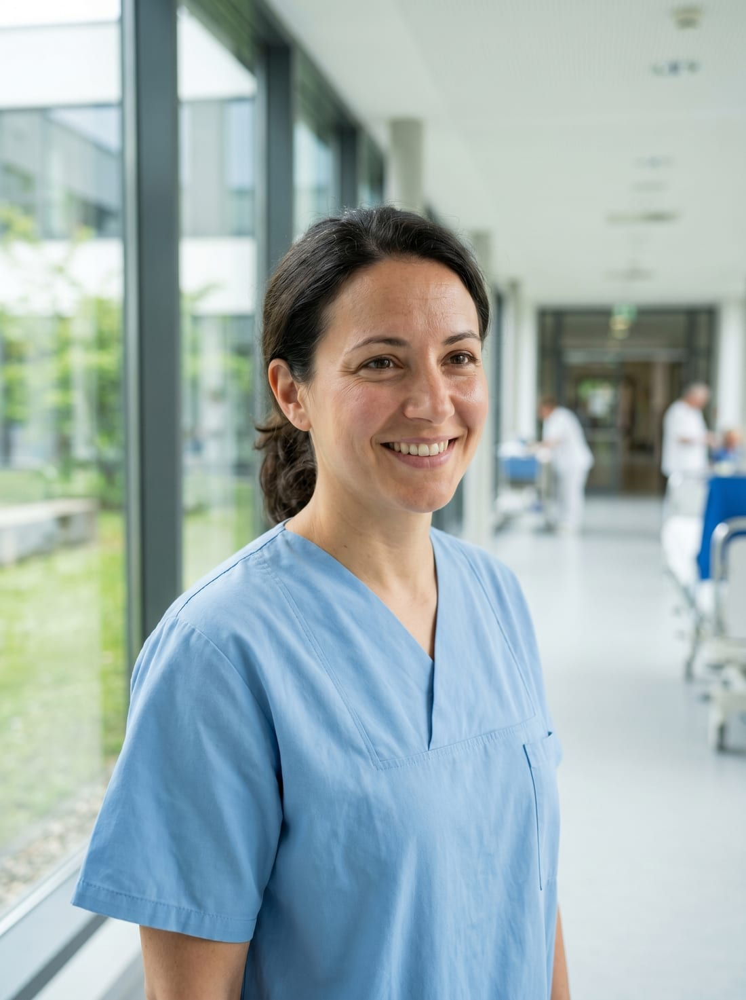

Лечение, которое не приходится откладывать из-за цены
«Люмена» помогает спокойно пройти лечение в проверенных клиниках Армении: подбираем клинику под ваш случай, заранее считаем понятную смету «под ключ», встречаем в Ереване и сопровождаем 24/7. Перелёт из Москвы — 2,5–3 часа, без виз и языкового барьера, с русскоязычным персоналом в клиниках.
Когда нужно лечение, а вокруг — одни вопросы
Вы уже сравнили цены дома и понимаете: хорошее лечение стоит дорого, а откладывать тревожно. За границей вроде дешевле — но как понять, кому довериться, и не остаться один на один с чужой страной? Это нормальные опасения. Давайте по порядку.
Цена в частной клинике пугает
Импланты, операция или серьёзный чек-ап в частной Москве легко превращаются в сумму, ради которой приходится ждать, копить или брать кредит. А со здоровьем тянуть не хочется.
За границей страшно остаться одному
Чужой город, незнакомые врачи, документы на другом языке. Кто объяснит, к кому идти, что подписывать и куда звонить, если возникнут вопросы?
Непонятно, каким клиникам можно верить
В интернете много заманчивых предложений и громких обещаний. Отличить достойную клинику от красивой картинки самому, издалека, почти невозможно.
Боязнь скрытых доплат
Назвали одну цену, а на месте набежали анестезия, стационар, расходники. В итоге «выгодно» оборачивается переплатой и неприятным сюрпризом.
Как мы сопровождаем вас от первого вопроса до дома
С «Люменой» вам не нужно разбираться во всём в одиночку. Мы — ваш проводник: берём на себя организацию, а решения всегда остаются за вами и врачом. Вот как проходит путь.

1. Разбираемся в вашей ситуации
Вы пишете нам в мессенджере или оставляете заявку. Координатор спокойно расспрашивает о задаче, при необходимости просит снимки или выписки и передаёт их в клиники — бесплатно и без обязательств.

2. Подбираем клинику и считаем смету «под ключ»
Показываем 1–2 подходящие клиники-партнёра, ориентир по плану лечения от врачей и прозрачную смету: лечение, перелёт, проживание, трансферы. Вы заранее видите, из чего складывается сумма.

3. Готовим поездку и встречаем в Ереване
Записываем на удобные даты, помогаем с билетами и жильём, встречаем в аэропорту. На приёмах и в клинике рядом русскоязычный персонал и ваш координатор — на связи 24/7.

4. Возвращаем домой и остаёмся на связи
После процедуры провожаем домой и не пропадаем: помогаем держать контакт с клиникой по рекомендациям и контрольным вопросам. Лечение завершилось — а поддержка остаётся.
Ереван — 2,5–3 часа от Москвы
Город, куда не страшно лететь за здоровьем: без виз, по-русски, с человеком рядом на каждом шаге.
Реальная забота, а не красивые слова
От встречи в аэропорту до приёма у врача — вот как проходит лечение с «Люменой».


Направления, с которыми мы помогаем
Мы работаем там, где Армения даёт настоящую пользу пациенту из России — по цене, доступу или сервису. По каждому направлению подберём клинику под ваш случай.
Стоматология
Импланты, виниры, коронки, протоколы All-on-4 / All-on-6. Импланты известных брендов по более доступной цене, в формате «всё включено» с проживанием.
Импланты в Армении: цены →Пластическая хирургия
Ринопластика, пластика живота, век, контурные коррекции. В цену клиники обычно уже входят операционная, анестезия и стационар. Деликатно и приватно.
Ринопластика в Армении: цены →Чек-апы и диагностика
Расширенное обследование за 1–2 дня: понять состояние здоровья, не теряя недели на очереди. Удобная точка старта, чтобы спокойно принять решение о лечении.
Чек-ап в Армении: цены →Плановая и общая хирургия
Лапароскопические и ортопедические вмешательства, эндопротезирование суставов «под ключ» с имплантом. Подбираем многопрофильную клинику под конкретный диагноз.
Репродукция и ЭКО
Помогаем с доступом к легальным для граждан России программам — суррогатному материнству и донорским программам, которые сегодня в РФ ограничены. Полная приватность и бережное сопровождение на каждом шаге.
Подробнее об ЭКО и суррогатстве →Посчитайте свой ориентир за минуту
Выберите направление и процедуру — покажем ориентир «Ереван под ключ» в сравнении с частной Москвой. Точную смету под ваш случай координатор посчитает бесплатно за 1 день.
Почему пациенты выбирают «Люмену»
Честная цена — ориентир экономии 30–60% к частной Москве
При сопоставимом уровне лечения вы видите итоговую смету «под ключ» заранее, без скрытых доплат на месте. За лечение платите напрямую клинике — наша координация для вас уже включена в пакет.
Без виз и языкового барьера
Армения — страна ЕАЭС: въезд по внутреннему паспорту РФ, без виз и лишних бумаг. В клиниках-партнёрах работает русскоязычный персонал, а координатор всегда переведёт и объяснит.
Близко и быстро
Перелёт из Москвы — всего 2,5–3 часа. Запись возможна за считаные дни, а вся поездка обычно занимает от 3 до 14 дней. Не нужно надолго выпадать из жизни и работы.
Живой человек рядом 24/7
У вас один личный координатор — не бот и не колл-центр. Он на связи от первого вопроса до возвращения домой и поддерживает контакт с клиникой после, когда нужны рекомендации или контрольный приём.
Армения, а не Турция или Корея — почему это проще для пациента из РФ
Лечение за рубежом бывает и в других странах. Но для гражданина России именно Армения снимает большинство барьеров: документы, перелёт, язык и оплату.
| Что важно пациенту из РФ | Армения · Ереван | Турция | Южная Корея |
|---|---|---|---|
| Документ для въезда | Внутренний паспорт РФ | Загранпаспорт | Загранпаспорт |
| Виза | Не нужна (ЕАЭС) | Не нужна (до 60 дней) | Нужна / K-ETA |
| Перелёт из Москвы | 2,5–3 часа | ~3–4 часа | ~9–10 часов |
| Язык в клиниках | Русскоязычный персонал | Чаще англ. / турецкий | Корейский / англ. |
| Оплата картами РФ и переводы | Работают (карты «Мир», переводы) | Карты РФ не работают | Карты РФ не работают |
| Суррогатное материнство и донорство для граждан РФ | Легально и доступно | Запрещено | Ограничено |
| Ориентир экономии к частной Москве | 30–60% | Варьируется | Часто выше |
Сравнение по открытым данным; визовые, платёжные и юридические правила могут меняться — актуальные условия уточняйте перед поездкой. По альтернативным направлениям мы тоже подскажем, если для вашего случая они подойдут лучше.
Почему наша помощь бесплатна для вас
Подбор клиники, расчёт сметы «под ключ» и сопровождение 24/7 — 0 ₽ для пациента. «Люмена» работает с клиниками по агентскому договору и получает вознаграждение от клиники, а не с вас. Цену лечения вы оплачиваете напрямую клинике по её договору — без наценки с нашей стороны. Поэтому обратиться и всё посчитать можно спокойно, ничем себя не обязывая.
Мы на вашей стороне — а не на стороне клиники
«Люмена» не продаёт конкретную клинику и не получает больше, если вы выберете дороже. Мы подбираем подходящую клинику из нескольких и представляем ваши интересы. Если у клиники возникнут вопросы по срокам, плану лечения или обязательствам — координатор подключается, помогает выйти на врача и довести ситуацию до решения. Вы не остаётесь с чужой страной и чужим языком один на один.
Что входит в стоимость «под ключ»
Полную смету вы видите заранее — без сюрпризов на месте. Вот что мы берём на себя и что входит в расчёт.
✓ Входит в пакет
- Подбор клиники и профильного врача под ваш случай
- Прозрачная смета и план лечения до поездки
- Помощь с авиабилетами и проживанием в Ереване
- Встреча в аэропорту и трансферы клиника ↔ жильё
- Личный координатор и переводчик на связи 24/7
- Сопровождение на приёмах и поддержка после возвращения
i Важно знать заранее
- Лечение вы оплачиваете напрямую клинике по её договору
- Виза не нужна — въезд в Армению по паспорту РФ
- Дополнительные процедуры по назначению врача — по факту и с вашего согласия
- Личные расходы (питание, досуг) — по желанию
Сколько можно сэкономить: ориентиры по ценам
Это рыночные ориентиры из открытых прайс-листов, а не ваша персональная смета. Реальная цифра зависит от клиники, брендов материалов и сложности случая — её мы посчитаем для вас бесплатно. Курс пересчёта: 1 USD ≈ 85 ₽.
| Процедура | Частная Москва | Ереван «под ключ» | Примечание |
|---|---|---|---|
| Имплант + коронка (1 единица) | 60–110 тыс ₽ | от ~34–60 тыс ₽ | Ориентир экономии 35–55%. Возможны импланты известных брендов по более доступной цене. |
| Винир E-max (1 единица) | 28–85 тыс ₽ | от ~21–30 тыс ₽ | Ориентир экономии до ~50%, зависит от объёма работ. |
| Ринопластика (нос) | от ~480 тыс ₽ | от ~170 тыс ₽ | Ориентир экономии до ~60%; операционная и стационар обычно уже включены. |
| Абдоминопластика (живот) | от ~650 тыс ₽ | от ~300 тыс ₽ | Ориентир экономии ~50–55% в формате «всё включено». |
| Расширенный чек-ап | 45–100 тыс ₽ | от ~13–33 тыс ₽ | Ориентир экономии 50–70%. Удобная точка старта за 1–2 дня. |
| Эндопротезирование сустава «под ключ» | от ~350–600 тыс ₽ | от ~$4 500–5 500 (≈ 380–470 тыс ₽) | С имплантом «под ключ»; итог зависит от бренда протеза и клиники. |
Цены приведены как диапазоны-ориентиры и не являются публичной офертой или гарантией стоимости лечения. Итоговая стоимость индивидуальна и зависит от вашего случая, выбранной клиники и материалов. Имеются противопоказания, необходима консультация специалиста.
С какими клиниками мы работаем и как их отбираем
Мы не клиника и не турагентство, а ваш проводник. Сами лечение не проводим — наша работа в том, чтобы рядом с вами оказались достойные врачи и клиники. Мы работаем с ведущими клиниками Армении, среди которых:
Работаем с ведущими клиниками Армении
Среди наших партнёров — многопрофильные центры и профильные клиники Еревана с современным оборудованием и русскоязычным персоналом. Конкретную клинику подбираем индивидуально под ваш случай.
Erebouni
Nairi
Astghik
Nork Marash
Mary Clinic
White Castle
Профили клиник указаны по открытым данным; финальную клинику под ваш случай подбираем индивидуально. «Люмена» не является медицинской организацией.
Опыт и репутация
Выбираем многопрофильные клиники и профильные центры с историей, современным оборудованием и понятной репутацией среди пациентов, в том числе из России.
Готовность к русскоязычным пациентам
Отдаём предпочтение клиникам, где есть русскоязычный персонал и привычный формат общения — чтобы вы понимали врача, а врач понимал вас.
Прозрачность по ценам и плану
Работаем с теми, кто открыто называет план лечения и из чего складывается смета. Никаких «всё посчитаем на месте» без предупреждения.
Прямой договор и оплата клинике
За лечение вы платите напрямую клинике по её договору — деньги не проходят через нас. Это прозрачно и снижает ваши риски.
Международные стандарты и лицензии
Мы отдаём приоритет клиникам, которые подтверждают качество независимыми аккредитациями. Среди партнёров — центр с международной аккредитацией JCI и клиники, сертифицированные по ISO 9001. Все клиники работают по лицензии Министерства здравоохранения Республики Армения.
Лечат профильные врачи — и вы узнаёте своего ещё до поездки
Мы не отправляем «к кому получится». Под ваш случай подбираем конкретного специалиста клиники и заранее присылаем его данные — чтобы вы спокойно приняли решение, зная, кто будет вас лечить.

Что мы проверяем и присылаем вам о враче
- Имя, специализацию и профиль — точно под вашу задачу
- Опыт и стаж, профильное образование и сертификаты
- Репутацию и отзывы пациентов, в том числе из России
- Предварительный план лечения и ориентир по срокам — до вылета
Лечение проводит клиника по прямому договору с вами; «Люмена» отвечает за подбор и сопровождение.
Легально для граждан России — деликатно и приватно
Часть репродуктивных программ сегодня ограничена в РФ. В Армении они легальны — а мы помогаем пройти этот путь спокойно и конфиденциально.
Правовая основа в Армении
В Армении вспомогательные репродуктивные технологии — ЭКО, суррогатное материнство и донорские программы — разрешены и регулируются законодательством Республики Армения (Закон РА «О репродуктивном здоровье и репродуктивных правах человека»).
- Доступ к программам, которые сегодня ограничены для граждан РФ
- Прямой договор с клиникой и юридическое сопровождение программы
- Прозрачные условия и защита интересов всех сторон
ЗАПОЛНИТЬ точные ссылки на статьи закона и постановление Правительства РА — уточнить у юриста перед запуском.
ЭКО и донорские программы
Подбор клиники и репродуктолога, доступ к донорским базам клиник, сопровождение цикла от первой консультации до результата.
Суррогатное материнство
Помощь с доступом к легальным в Армении программам, юридическое оформление через клинику, деликатное сопровождение на каждом шаге.
Сопровождение «под ключ»
Перелёт, проживание, трансферы, личный координатор и переводчик 24/7 — как и по остальным направлениям «Люмены».
«Люмена» оказывает организационные и информационные услуги и не осуществляет медицинскую или юридическую деятельность. Медицинские и юридические вопросы решаются с профильными специалистами клиники по прямому договору с вами.
Что говорят люди, которые прошли этот путь
заменить реальным видео
заменить реальным видео
заменить реальным видео
«Главное, чего мы боялись, — остаться в чужом городе одни. Но координатор был на связи буквально в любой час: встретил, проводил в клинику, всё перевёл и объяснил. Смету показали заранее, и сюрпризов на месте не было — для нас это оказалось важнее всего.»
«Хотелось, чтобы всё прошло спокойно и приватно, без лишних глаз и разговоров. В «Люмене» отнеслись очень бережно: подобрали клинику, помогли с поездкой, держали меня в курсе на каждом шаге. Я чувствовала, что я не одна.»
«У меня армянские корни, давно хотел нормально обследоваться, но всё откладывал из-за времени. Здесь всё уложилось буквально в пару дней: записали быстро, по деньгам вышло заметно мягче, чем дома. Организация — без нервов.»
Тексты ниже — собирательные примеры типичных ситуаций для демонстрации. Перед публикацией их необходимо заменить на реальные верифицированные отзывы с письменного согласия пациентов на использование. Отзывы описывают опыт организации и сопровождения и не являются обещанием результата лечения.
Частые вопросы — честные ответы
А качество лечения там точно достойное?
Мы работаем с многопрофильными клиниками и профильными центрами Армении — с современным оборудованием, опытными врачами и репутацией среди пациентов, в том числе из России. При этом мы не клиника и не даём обещаний по результату лечения: его определяют врач и ваш конкретный случай. Перед лечением обязательна очная консультация специалиста. Имеются противопоказания, необходима консультация специалиста.
Кто отвечает, если в ходе лечения возникнут вопросы?
За медицинскую часть отвечает клиника, с которой вы заключаете прямой договор, — как и в любой клинике дома. «Люмена» отвечает за организацию: подбор, координацию, сопровождение и связь с клиникой. Если возникает вопрос, ваш координатор помогает быстро выйти на врача и разобраться в ситуации.
Это вообще не развод? Как понять, что вам можно доверять?
Понимаем такое опасение — поэтому строим всё на прозрачности. За лечение вы платите напрямую клинике по её договору, деньги не проходят через нас. Смету «под ключ» вы видите заранее, до поездки. Расчёт и подбор клиники бесплатны и ни к чему вас не обязывают — можно спокойно всё взвесить и решить.
Сколько в итоге я заплачу и нет ли скрытых доплат?
Мы заранее показываем смету «под ключ»: лечение, перелёт, проживание, трансферы. Цены на сайте — это диапазоны-ориентиры, а не ваша персональная смета. Итоговая стоимость индивидуальна и зависит от клиники, материалов и сложности случая — её мы рассчитаем для вас бесплатно перед поездкой, чтобы сюрпризов на месте не было.
Насколько это безопасно — ехать лечиться в другую страну?
Армения — страна ЕАЭС: въезд по внутреннему паспорту РФ, без виз. Перелёт из Москвы — 2,5–3 часа, в клиниках есть русскоязычный персонал, а ваш координатор на связи 24/7 на всём пути. Вся поездка обычно занимает от 3 до 14 дней. Решение о возможности лечения принимает врач после очной консультации.
Я по поводу ЭКО и репродукции — это конфиденциально?
Да, полная приватность — наш приоритет. Мы деликатно помогаем с доступом к легальным для граждан России программам, включая суррогатное материнство и донорские программы, которые сегодня в РФ ограничены. Общение ведём бережно и только по тем каналам, которые удобны вам. Все медицинские вопросы решаются с профильными специалистами клиники.
Бесплатный гайд: «Лечение в Армении 2026»
Цены «под ключ», как проходит поездка и как выбрать клинику, чтобы не переплатить — в одном PDF. Без регистрации.
Сделайте первый спокойный шаг
Расскажите о своей ситуации — мы бесплатно подберём подходящую клинику и посчитаем смету «под ключ» за 1 день. Это ни к чему вас не обязывает: вы просто получите ясную картину и сможете спокойно решить.